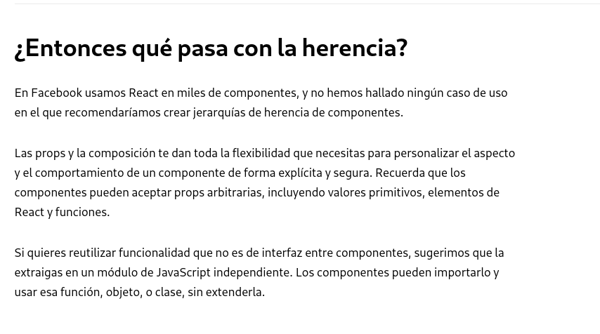

<!DOCTYPE html>
<html lang="en">
  <head>
    <meta charset="utf-8" />
    <meta name="viewport" content="width=device-width, initial-scale=1.0, maximum-scale=1.0, user-scalable=no" />

    <title>Cursos 2019</title>
    <link rel="stylesheet" href="./css/reveal.css" />
    <link rel="stylesheet" href="./css/theme/solarized.css" id="theme" />
    <link rel="stylesheet" href="./css/highlight/atom-one-dark.css" />
    <link rel="stylesheet" href="./css/print/paper.css" type="text/css" media="print" />
    <link rel="stylesheet" href="./css/styles.css" />

  </head>
  <body>
    <div class="reveal">
      <div class="slides"><section  data-markdown><script type="text/template">

# Curso 2019

Capacitación de JavaScript

[//]: <> ()
[//]: <> ()


</script></section><section ><section data-markdown><script type="text/template">
## Sobre el curso
</script></section><section data-markdown><script type="text/template">
### Docentes

- Angel Javier Bazzocco
- Ulises Jeremias Cornejo Fandos
- Lucas Di Cunzolo
</script></section><section data-markdown><script type="text/template">
### Conocimientos previos

- HTML
- Hoja de Estilos en Cascada
- Programación orientada a objetos
</script></section><section data-markdown><script type="text/template">
### Conocimientos deseados

- HTTP - Verbos y funcionamiento
- Arquitectura REST - Fundamentos
</script></section><section data-markdown><script type="text/template">
### Objetivos

- Adquirir conocimientos generales de JS Vanilla
- Asimilar el uso de ES6
- Desarrollar una aplicación FullStack JS sobre ES6
  - Frontend utilizando ReactJS
  - Backend utilizando Express.js
</script></section><section data-markdown><script type="text/template">
### Constancia de aprobación

- Desarrollador Frontend React
- Desarrollador Backend Express y Node
- Desarrollador Full Stack JS
</script></section><section data-markdown><script type="text/template">
### Requisitos para las certificaciones

- Asistir al 85% de las clases
- Contar con una entrega que demuestre los contenidos mínimos de la certificación
  - Las entregas pueden contar con reentregas dependiendo el caso

</script></section></section><section ><section data-markdown><script type="text/template">
## Introducción a JavaScript


</script></section><section data-markdown><script type="text/template">
## ¿Qué es JavaScript?

JavaScript es un lenguaje de scripting multiplataforma y orientado a objetos.

<small>
    Es un lenguaje pequeño y liviano. Dentro de un ambiente de host, JavaScript puede conectarse a los objetos de su ambiente y proporcionar control programático sobre ellos.
</small>
</script></section><section data-markdown><script type="text/template">
JavaScript contiene una librería estándar de objetos, tales como  _Array_, _Date_, y _Math_, y un conjunto central de elementos del lenguaje, tales como operadores, estructuras de control, y sentencias.
</script></section><section data-markdown><script type="text/template">
El núcleo de JavaScript puede extenderse para varios propósitos, complementándolo con objetos adicionales, por ejemplo:

- Client-side
- Server-side
</script></section><section data-markdown><script type="text/template">
### Client-side

JavaScript extiende el núcleo del lenguaje proporcionando objetos para controlar un navegador y su modelo de objetos (o DOM, por las iniciales de Document Object Model).

<small>
    Por ejemplo, las extensiones del lado del cliente permiten que una aplicación coloque elementos en un formulario HTML y responda a eventos del usuario, tales como clicks del ratón, ingreso de datos al formulario y navegación de páginas.
</small>
</script></section><section data-markdown><script type="text/template">
### Server-side

JavaScript extiende el núcleo del lenguaje proporcionando objetos relevantes a la ejecución de JavaScript en un servidor.

<small>
    Por ejemplo, las extensiones del lado del servidor permiten que una aplicación se comunique con una base de datos, proporcionar continuidad de la información de una invocación de la aplicación a otra, o efectuar manipulación de archivos en un servidor.
</small>
</script></section><section data-markdown><script type="text/template">
## Gramática y Tipos
</script></section><section data-markdown><script type="text/template">
### Conceptos básicos
</script></section><section data-markdown><script type="text/template">
### Comentarios

La sintaxis de comentarios es la misma como en C++ y en muchos otros lenguajes:

```javascript
// comentario en una sola línea
 
/* este es un comentario 
   multilínea
 */
 
/* no puedes, sin embargo, /* anidar comentarios */ SyntaxError */
```
<!-- .element: contenteditable="true" -->
</script></section><section data-markdown><script type="text/template">
### Declaraciones

Hay tres tipos de declaraciones en JavaScript.

- **var**
  Declara una variable, iniciándola opcionalmente a un valor.

- **let**
  Declara una variable local en un bloque de ámbito, inicializándola opcionalmente a un valor.

- **const**
  Declara una constante de sólo lectura en un bloque de ámbito.
</script></section><section data-markdown><script type="text/template">
### Variables

<small>
    Las variables se usan como nombres simbólicos para valores en tu aplicación. Los nombres de las variables, llamados identificadores, se rigen por ciertas reglas.
</small>
</script></section><section data-markdown><script type="text/template">
Un identificador en JavaScript tiene que empezar con una letra, un guión bajo (_) o un símbolo de dólar ($); los valores subsiguientes pueden ser números.

<small>
    Debido a que JavaScript diferencia entre mayúsculas y minúsculas, las letras incluyen tanto desde la "A" hasta la "Z" (mayúsculas) como de la "a" hasta la "z".
</small>
</script></section><section data-markdown><script type="text/template">
Puedes usar la ISO 8859-1 o letras Unicode tales como å y ü en un identificador.

<small>
    Puedes también usar el Unicode escape sequences como caracteres en identificadores.
</small>
</script></section><section data-markdown><script type="text/template">
Algunos ejemplos de nombre permitidos son Numero_Visitas, temp99, _nombre, $nombre.
</script></section><section data-markdown><script type="text/template">
## Declarando variables

Puedes declarar una variable de tres maneras:
</script></section><section data-markdown><script type="text/template">
- Con la palabra clave **var**. Por ejemplo, _var x = 42_.
  <small>
    Esta sintaxis puede ser usada para declarar tanto variables locales como globales.
  </small>
- Simplemente asignándole un valor. Por ejemplo, _x = 42_. 
  <small>
    Esto siempre declara una variable global y no puede ser cambiada a nivel local. Esto genera una advertencia strict de JavaScript. No deberías usar esta variante.
  </small>
- Con la palabra clave let. Por ejemplo, _let y = 13_.
  <small>
    Esta variable puede ser usada para declarar una variable local en un bloque de ámbito. Ver Ámbito de variable más abajo.
  </small>
</script></section><section data-markdown><script type="text/template">
## Evaluando variables

Una variable declarada usando la sentencia var o let sin asignarle un valor inicial tiene el valor undefined.

Al intentar acceder a una variable no declarada dará como resultado la excepción ReferenceError.
</script></section><section data-markdown><script type="text/template">
```javascript
var a;
console.log('El valor de a es ' + a); // El valor de a es undefined

console.log('El valor de b es ' + b); // El valor de b es undefined
var b;

console.log('El valor de c es ' + c); // Uncaught ReferenceError: c no está definida

let x;
console.log('El valor de x es ' + x); // El valor de x es undefined

console.log('El valor de y es ' + y); // Uncaught ReferenceError: y no está definida
let y;
```
<!-- .element: contenteditable="true" -->
</script></section><section data-markdown><script type="text/template">
<small>
    Se puede usar undefined para determinar si una variable tiene un valor. En el siguiente código a la variable input no se le asigna ningún valor y la sentencia de control if la evalúa como true.
</small>

```javascript
var input;

if (input === undefined) {
    hazEsto();
} else {
    hazEso();
}
```
<!-- .element: contenteditable="true" -->
</script></section><section data-markdown><script type="text/template">
<small>
    El valor undefined se comporta como un false cuando se utiliza en un contexto booleano. Por ejemplo, el siguiente código ejecuta la función myFunction porque el elemento myArray no ha sido definido:
</small>

```javascript
var myArray = new Array();

if (!myArray[0]) {
    myFunction();
}
```
<!-- .element: contenteditable="true" -->
</script></section><section data-markdown><script type="text/template">
<small>
    El valor undefined se convierte en NaN, no numérico, cuando se usa en una operación aritmética.
</small>

```javascript
var a;

a + 2; // Se evalua a NaN
```
<!-- .element: contenteditable="true" -->
</script></section><section data-markdown><script type="text/template">
<small>
    Cuando se evalúa una variable nula, el valor null se comporta como el 0 en operaciones aritméticas y como false en operaciones lógicas. Por ejemplo:
</small>

```javascript
var n = null;

console.log(n * 32); // Va a lanzar 0 a la consola
```
<!-- .element: contenteditable="true" -->
</script></section><section data-markdown><script type="text/template">
## Variables hoisting

```javascript
/**
 * Ejemplo 1
 */
console.log(x === undefined); // true
var x = 3;

/**
 * Ejemplo 2
 */
// devolverá un valor undefined
var myvar = "my value";
 
(function() {
  console.log(myvar); // undefined
  var myvar = "local value";
})();
```
<!-- .element: contenteditable="true" -->
</script></section><section data-markdown><script type="text/template">
Debido al **hoisting**, todas las declaraciones var en una función deben colocarse lo más cerca posible de la parte superior de la función. Esta buena práctica mejora la claridad del código.
</script></section><section data-markdown><script type="text/template">
### Hoisting y let

```javascript
console.log(x); // ReferenceError

let x = 3;
```
<!-- .element: contenteditable="true" -->
</script></section><section data-markdown><script type="text/template">
### Función Hoisting

```javascript
/* Declaración de la función */

foo(); // "bar"

function foo() {
  console.log("bar");
}


/* Expresión de la función */

baz(); // TypeError: baz no es una función

var baz = function() {
  console.log("bar2");
};
```
<!-- .element: contenteditable="true" -->
</script></section><section data-markdown><script type="text/template">
## Estructura de datos y tipos
</script></section><section data-markdown><script type="text/template">
### Tipos de datos
</script></section><section data-markdown><script type="text/template">
<!-- .slide: style="text-align: left" -->

#### Tipos de datos primitivos

-  [**Boolean**](https://developer.mozilla.org/es/docs/Glossary/Boolean). _true_ y _false_
-  [**null**](https://developer.mozilla.org/es/docs/Glossary/Null). Una palabra clave especial que denota un valor _null_. 
<small>
    Como JavaScript es case-sensitive, null no es lo mismo que NULL o cualquier otra variante.
</small>
-  [**undefined**](https://developer.mozilla.org/es/docs/Glossary/undefined). Una propiedad de alto nivel cuyo valor no es definido.
-  [**Number**](https://developer.mozilla.org/es/docs/Glossary/Numero). 42 o 3.14159.
-  [**String**](https://developer.mozilla.org/es/docs/Glossary/String). "Hola".
</script></section><section data-markdown><script type="text/template">
<!-- .slide: style="text-align: left" -->

#### Otros tipos de datos

-  **Object**

* * *

<small>
    Aunque estos tipos de datos son una cantidad relativamente pequeña, permiten realizar funciones útiles con tus aplicaciones. Los otros elementos fundamentales en el lenguaje son los **Objects** y las **funciones**. Puedes pensar en objetos como contenedores con nombre para los valores, y las funciones como procedimientos que puede realizar tu aplicación.
</small>
  </script></section><section data-markdown><script type="text/template">
### Conversión de Tipos

<small>
    JavaScript es un lenguaje de tipo dinámico. Esto significa que no tienes que especificar el tipo de dato de una variable cuando la declaras, y los tipos de datos son convertidos automáticamente de acuerdo a lo que se necesite en la ejecución del script.
</small>
</script></section><section data-markdown><script type="text/template">
```javascript
var respuesta = 42

// y posteriormente

respuesta = "Hola, soy una respuesta!"
```
<!-- .element: contenteditable="true" -->

<small>
    Debido a que es un lenguaje de tipos dinámicos, esta asignación no causa un mensaje de error.
</small>
</script></section><section data-markdown><script type="text/template">
```javascript
x = "La respuesta es " + 42 // "La respuesta es 42"
y = 42 + " es la respuesta" // "42 es la respuesta"
```
<!-- .element: contenteditable="true" -->
</script></section><section data-markdown><script type="text/template">
En declaraciones que involucran otros operadores, JavaScript no convierte los valores numéricos a string. Por ejemplo:

```javascript
"37" - 7 // 30
"37" + 7 // "377"
```
<!-- .element: contenteditable="true" -->
</script></section><section data-markdown><script type="text/template">
### Convertir string a números

En el caso que un valor representando un número está en memoria como string, hay métodos para la conversión.

-   [parseInt()](https://developer.mozilla.org/en-US/docs/Web/JavaScript/Reference/Global_Objects/parseInt)
-   [parseFloat()](https://developer.mozilla.org/en-US/docs/Web/JavaScript/Reference/Global_Objects/parseFloat)
</script></section><section data-markdown><script type="text/template">
**parseInt** sólo retornará números enteros, por lo que su uso es disminuido por los decimales. Adicionalmente, una buena práctica para parseInt es incluir siempre el parámetro _radix_. El parámetro rádix es usado para especificar qué sistema numérico será usado.
</script></section><section data-markdown><script type="text/template">
Un método alternativo para recibir un número de un string es con el operador + (más unario):

```javascript
"1.1" + "1.1" = "1.11.1"
(+"1.1") + (+"1.1") = 2.2   
// Nota: los paréntesis son para fines demostrativos, no son obligatorios.
```
<!-- .element: contenteditable="true" -->
</script></section><section data-markdown><script type="text/template">
<!-- .slide: style="text-align: left" -->

## Literales

Los literales se utilizan para representar valores en JavaScript. Estos son valores fijos, no variables, que literalmente proporciona en su script.
</script></section><section data-markdown><script type="text/template">
### Literales Array

Un literal array es un lista de cero o más expresiones, cada uno representa un elemento array, entre corchetes ([]).

```javascript
var cafes = [ "Tostado Frances", "Colombiano", "Kona" ];
```
<!-- .element: contenteditable="true" -->
</script></section><section data-markdown><script type="text/template">
Los literales array son también objetos array.

-  [Array](https://developer.mozilla.org/es/docs/Web/JavaScript/Referencia/Objetos_globales/Array)
-  [colecciones indexadas](https://developer.mozilla.org/en-US/docs/Web/JavaScript/Guide/Indexed_collections).
</script></section><section data-markdown><script type="text/template">
```javascript
var peces = [ "Leon", , "Angel" ];

// peces[0] es "Leon"
// peces[1] es undefined
// peces[2] es "Angel"
```
<!-- .element: contenteditable="true" -->
</script></section><section data-markdown><script type="text/template">
```javascript
var miLista = [ 'casa', , 'escuela', ];

// miLista[3]
```
<!-- .element: contenteditable="true" -->
</script></section><section data-markdown><script type="text/template">
```javascript
var miLista = [ , 'casa', , 'escuela' ];

// miLista[0] y miLista[2] faltan
```
<!-- .element: contenteditable="true" -->
</script></section><section data-markdown><script type="text/template">
### Literales Booleanos

Los literales de tipo Booleanos tienen 2 valores posibles: _true_ y _false_.
</script></section><section data-markdown><script type="text/template">
### Literales Enteros

Los Enteros pueden ser expresados en decimal (base 10), hexadecimal (base 16), octal (base 8) y binario (base 2).

-  0, 117 and -345 (decimal, base 10)
-  015, 0001 and -077 (octal, base 8) 
-  0x1123, 0x00111 and -0xF1A7 (hexadecimal, "hex" o base 16)
</script></section><section data-markdown><script type="text/template">
### Literales de Punto Flotante

```javascript
 3.1415
-3.1E12
  .1e12
2E-12
3.14
2345.789
 .3333333333333333333
-.283185307179586
```
<!-- .element: contenteditable="true" -->
</script></section><section data-markdown><script type="text/template">
### Literales Tipo Objeto

Un literal Objeto es una lista de cero o mas parejas de nombres de propiedades asociadas con el respectivo valor, encerradas entre corchetes ({}).
</script></section><section data-markdown><script type="text/template">
```javascript
var Ventas = "Toyota";

function TiposCarro(nombre) {
  if (nombre == "Honda") {
    return nombre;
  } else {
    return "Lo siento, nosotros no vendemos " + nombre + ".";
  }
}

var carro = {
    miCarro: "Saturn",
    getCarro: TiposCarro("Honda"),
    especial: Ventas
};

console.log(carro.miCarro);  // Saturn
console.log(carro.getCarro); // Honda
console.log(carro.especial); // Toyota
```
<!-- .element: contenteditable="true" -->
</script></section><section data-markdown><script type="text/template">
Adicionalmente el nombre de una propiedad puede ser un literal entero o puede corresponder a otro objeto, como se muestra a continuación.

```javascript
var auto = {
    algunosAutos: { a: "Saab", "b": "Jeep" }, 
    7: "Mazda"
};

console.log(auto.algunosAutos.b); // Jeep
console.log(auto[7]); // Mazda
```
<!-- .element: contenteditable="true" -->
</script></section><section data-markdown><script type="text/template">
```javascript
var propiedadesDeNombreInusual = {
  "": "Un string vacio",
  "!": "Bang!"
}

console.log(propiedadesDeNombreInusual."");   // SyntaxError: Unexpected string
console.log(propiedadesDeNombreInusual[""]);  // "Un string vacio"
console.log(propiedadesDeNombreInusual.!);    // SyntaxError: Unexpected token !
console.log(propiedadesDeNombreInusual["!"]); // "Bang!"
```
<!-- .element: contenteditable="true" -->
</script></section><section data-markdown><script type="text/template">
```javascript
var foo = { a: "alpha", 2: "two" };

console.log(foo.a);     // alpha
console.log(foo[2]);    // two
console.log(foo.2);     // Error: missing ) after argument list
console.log(foo[a]);    // Error: a is not defined
console.log(foo["a"]);  // alpha
console.log(foo["2"]);  // two
```
<!-- .element: contenteditable="true" -->
</script></section><section data-markdown><script type="text/template">
### Literales String

```javascript
"foo"
'bar'
"1234"
"Una linea \n otra linea"
"El gato de Jhon"
```
<!-- .element: contenteditable="true" -->
</script></section><section data-markdown><script type="text/template">
```javascript
console.log("El gato de Jhon".length);

// Imprimira el numero de caracteres en el literal, incluyendo espacios en blanco. 
// En este caso, 15.
```
<!-- .element: contenteditable="true" -->
</script></section><section data-markdown><script type="text/template">
#### Carácteres especiales en strings

```javascript
console.log("una linea \n otra linea");
```
<!-- .element: contenteditable="true" -->
</script></section><section data-markdown><script type="text/template">
### RegExp Literales

Un regex literal (_tema fuera del curso_) es un patron encerrado entre barras diagonales. El siguiente es un ejemplo de regex literal.

```javascript
var re = /ab+c/;
```
<!-- .element: contenteditable="true" -->
</script></section><section data-markdown><script type="text/template">
## Control de flujo y manejo de errores
</script></section><section data-markdown><script type="text/template">
### Sentencia de bloque

La sentencia de bloque es el tipo de sentencia más básico y se utiliza para agrupar sentencias. El bloque se delimita entre un par de llaves:

```
{ 
  sentencia_1;
  sentencia_2;
  . 
  . 
  . 
  sentencia_n; 
}
```
<!-- .element: contenteditable="true" -->
</script></section><section data-markdown><script type="text/template">
Los bloques de sentencias son comúnmente utilizados para sentencias de  control de flujo  (ej. if, for, while).

```javascript
while (x < 10) {
  x++;
}
```
<!-- .element: contenteditable="true" -->

En este caso { x++; } es el bloque de sentencias.
</script></section><section data-markdown><script type="text/template">
**Importante**: Javascript no tiene ámbito a nivel bloque en versiones anteriores a ECMAScript 6. 

```javascript
var x = 1;

{
  var x = 2;
}

console.log(x); // imprime 2
```
<!-- .element: contenteditable="true" -->
</script></section><section data-markdown><script type="text/template">
### Sentencias condicionales

```javascript
if (condición) {
    sentencia_1;
} else { 
    sentencia_2;
}
```
<!-- .element: contenteditable="true" -->
</script></section><section data-markdown><script type="text/template">
```javascript
if (condición) {
  ejecutar_sentencia_1_si_condición_es_verdadera;
  ejecutar_sentencia_2_si_condición_es_verdadera;
} else {
  ejecutar_sentencia_3_si_condición_es_falsa;
  ejecutar_sentencia_4_si_condición_es_falsa;
}
```
<!-- .element: contenteditable="true" -->
</script></section><section data-markdown><script type="text/template">
#### Asignación dentro de una expr de condición

```javascript
if ((x = y)) {
  /* sentencias aquí */
}
```
<!-- .element: contenteditable="true" -->
</script></section><section data-markdown><script type="text/template">
#### Valores falsos

Los siguientes valores se evalúan como falso (también conocidos como valores Falsy):

-  false
-  undefined
-  null
-  0
-  NaN
-  la cadena vacía ("")
</script></section><section data-markdown><script type="text/template">
#### Ejemplo

```javascript
var x = 4;

function comprobarDatos() {
  if (x == 3) {
    return true;
  } else {
    alert("Introduce exactamente tres caracteres. " +
    document.form1.threeChar.value + " no es válido.");
    return false;
  }
}
```
<!-- .element: contenteditable="true" -->
</script></section><section data-markdown><script type="text/template">
### Switch

```javascript
switch (tipoFruta) {
  case "Naranjas":
    console.log("Naranjas cuestan 0,59€ el kilo.");
    break;
  case "Manzanas":
    console.log("Manzanas cuestan 0,32€ el kilo.");
    break;
  case "Plátanos":
    console.log("Plátanos cuestan 0,48€ el kilo.");
    break;
  case "Cerezas":
    console.log("Cerezas cuestan 3,00€ el kilo.");
    break;
  case "Mangos":
    console.log("Mangos cuestan 0,56€ el kilo.");
    break;
  case "Papayas":
    console.log("Mangos y papayas cuestan 2,79€ el kilo.");
    break;
  default:
   console.log("Disculpa, no tenemos el tipo de fruta " + tipoFruta + ".");
}

console.log("¿Te gustaría tomar algo?");
```
<!-- .element: contenteditable="true" -->
</script></section><section data-markdown><script type="text/template">
### Sentencias de manejo de excepciones

Puedes lanzar excepciones usando la sentencia throw y manejarlas usando las sentencias _try_..._catch_.
</script></section><section data-markdown><script type="text/template">
Practicamente cualquier objeto puede ser lanzado en JavaScript. Sin embargo, no todos son creados igual.
</script></section><section data-markdown><script type="text/template">
#### Sentencia throw

```javascript
throw "Error2";   // Tipo string
throw 42;         // Tipo número
throw true;       // Tipo booleano
throw { toString: function() { return "¡Soy un objeto!"; } };
```
<!-- .element: contenteditable="true" -->
</script></section><section data-markdown><script type="text/template">
#### Try Catch

```javascript
function getValue(x) {
  if (x != null) {
    return x;
  } else {
    throw "InvalidMonthNo";
  }
}

try {
  value = getValue(x);
} catch (e) {
  value = null;
  console.log(e)
}
```
<!-- .element: contenteditable="true" -->
</script></section><section data-markdown><script type="text/template">
### Finally

```javascript
function f() {
  try {
    throw "bogus";
  } catch(e) {
    console.log('atrapado dentro de f');
    throw e; // Esta sentencia throw es suspendida hasta que
             // el bloque finally se termine de ejecutar
  } finally {
    return false; // Sobreescribe la sentencia throw anterior
  }
  // "return false" es ejecutado ahora
}

try {
  f();
} catch(e) {
  // Esta nunca es encontrada porque la sentencia throw dentro
  // del bloque catch es sobrescrita por la sentencia return
  // en el bloque finally
  console.log('atrapado fuera de f');
}

// SALIDA
// atrapado dentro de f
```
<!-- .element: contenteditable="true" -->
</script></section><section data-markdown><script type="text/template">
## Funciones
</script></section><section data-markdown><script type="text/template">
Las funciones son uno de los pilares fundamentales de JavaScript. Una función es un procedimiento en JavaScript - un conjunto de sentencias que realizan una tarea o calculan un valor.
</script></section><section data-markdown><script type="text/template">
<!-- .slide: style="text-align: left" -->

### Definición de funciones

La definición de una función (también llamada declaración de función o sentencia de función) consiste de la palabra clave (reservada) **function**, seguida por:

- El nombre de la función (opcional).
- Una lista de argumentos para la función, encerrados entre paréntesis y separados por comas (,).
- Las sentencias JavaScript que definen la función, encerradas por llaves, ({}).
</script></section><section data-markdown><script type="text/template">
```javascript
function square(number) {
  return number * number;
}
```
<!-- .element: contenteditable="true" -->
</script></section><section data-markdown><script type="text/template">
-  Los parámetros primitivos (como puede ser un número) son pasados a las funciones por **valor**.
-  Si pasa un objecto (p. ej. un valor no primitivo, como un _Array_ o un objeto definido por el usuario) como parámetro, y la función **cambia las propiedades del objeto**, este cambio es visible desde afuera de la función.
</script></section><section data-markdown><script type="text/template">
```javascript
function myFunc(theObject) {
  theObject.make = "Toyota";
}

var mycar = {make: "Honda", model: "Accord", year: 1998},
    x,
    y;

x = mycar.make;     // x toma el valor "Honda"

myFunc(mycar);

y = mycar.make;
// y toma el valor "Toyota"
// (la propiedad make fue cambida por la funcion)
```
<!-- .element: contenteditable="true" -->
</script></section><section data-markdown><script type="text/template">
<small>
  **Nota**: Tenga en cuenta que asignar un nuevo objeto al parámetro no tendrá ningún efecto fuera de la función, porque esto está cambiando el valor del parámetro en lugar de una de las propiedades del objeto:
</small>

```javascript
function myFunc(theObject) {
  theObject = {make: "Ford", model: "Focus", year: 2006};
}

var mycar = {make: "Honda", model: "Accord", year: 1998},
    x,
    y;

x = mycar.make;     // x toma el valor "Honda"

myFunc(mycar);
y = mycar.make;     // y sigue con el valor "Honda"
```
<!-- .element: contenteditable="true" -->
</script></section><section data-markdown><script type="text/template">
### Expresiones de Función
</script></section><section data-markdown><script type="text/template">
<small>
  Si bien la declaración de la función anterior es sintácticamente una sentencia, las funciones pueden también ser creadas por una expresión de función. Tal función puede ser anónima; no debe tener un nombre.
</small>

```javascript
var square = function(number) { return number * number };

var x = square(4) // x obtiene el valor 16
```
<!-- .element: contenteditable="true" -->
</script></section><section data-markdown><script type="text/template">
```javascript
var factorial = function fac(n) {
    return n < 2 ? 1 : n * fac(n - 1)
};

console.log(factorial(3));
```
<!-- .element: contenteditable="true" -->
</script></section><section data-markdown><script type="text/template">
<small>
  Las expresiones de función son convenientes cuando se pasa una función como argumento a otra función. El siguiente ejemplo muestra una función map siendo definida y luego llamada con una expresión de función como primer parámetro:
</small>

```javascript
function map(f, a) {
  var result = [], // Crea un nuevo Array
      i;

  for (i = 0; i != a.length; i++) {
    result[i] = f(a[i]);
  }
  
  return result;
}
```
<!-- .element: contenteditable="true" -->
</script></section><section data-markdown><script type="text/template">
El siguiente código retorna [ 0, 1, 8, 125, 1000 ].

```javascript
var multiplicar = function(x) { return x * x * x; }

map(multiplicar, [0, 1, 2, 5, 10]);
```
<!-- .element: contenteditable="true" -->
</script></section><section data-markdown><script type="text/template">
## Expresiones y Operadores

Muy similares a los mismos en el resto de los lenguajes de programación. Se puede ver un listado detallado de los operadores en la siguiente [documentación](https://developer.mozilla.org/en-US/docs/Web/JavaScript/Guide/Expressions_and_Operators).
</script></section><section data-markdown><script type="text/template">
## Casos Particulares
</script></section><section data-markdown><script type="text/template">
### Operador condicional (ternario)

El operador condicional es el único operador de JavaScript que necesita tres operandos. El operador asigna uno de dos valores basado en una condición. La sintaxis de este operador es:

```javascript
condición ? valor1 : valor2
```
<!-- .element: contenteditable="true" --></script></section><section data-markdown><script type="text/template">
### Ejemplo

```javascript
var estado = (edad >= 18) ? "adulto" : "menor";
```
<!-- .element: contenteditable="true" --></script></section><section data-markdown><script type="text/template">
### Operador coma

El operador coma (,) simplemente evalúa ambos operandos y retorna el valor del último. Este operador es ante todo utilizado dentro de un ciclo **for**, permitiendo que diferentes variables sean actualizadas en cada iteración del ciclo.

```javascript
for (var i = 0, j = 9; i <= j; i++, j--) {
  console.log("a[" + i + "][" + j + "]= " + a[i][j]);
}
```
<!-- .element: contenteditable="true" --></script></section><section data-markdown><script type="text/template">
## Operadores Relacionales

<small>
  El operador in devuelve true si la propiedad especificada como primer operando se encuentra en el objeto especificado como segundo operando. 
</small>

```javascript
var arboles = new Array("secoya", "laurel", "cedro",
                        "roble", "arce");

0 in arboles;        // devuelve true
3 in arboles;        // devuelve true
6 in arboles;        // devuelve false

"laurel" in arboles; 
// devuelve false (Se debe especificar el número de índice,
// no el valor contenido en ese índice)

"length" in arboles;
// devuelve true (length es una propiedad del Array)
```
<!-- .element: contenteditable="true" --></script></section><section data-markdown><script type="text/template">
## Operadores unarios
</script></section><section data-markdown><script type="text/template">
### typeof

```javascript
var miFuncion = new Function("5 + 2");
var forma = "redonda";
var largo = 1;
var hoy = new Date();

typeof miFuncion; // devuelve "function"
typeof forma;     // devuelve "string"
typeof largo;     // devuelve "number"
typeof hoy;       // devuelve "object"
typeof noExiste;  // devuelve "undefined"
typeof true;      // devuelve "boolean"
typeof null;      // devuelve "object"
```
<!-- .element: contenteditable="true" --></script></section><section data-markdown><script type="text/template">
### delete

```javascript
x = 42;
var y = 43;
miObj = new Number();
miObj.h = 4;    // crea la propiedad "h"

delete x;       // devuelve true (se puede eliminar si se declaró implícitamente)
delete y;       // devuelve false (no se puede eliminar si se declaró con var)
delete Math.PI; // devuelve false (no se pueden eliminar propiedades predefinidas)
delete miObj.h; // devuelve true (se pueden eliminar propiedades definidas por el usuario)
delete miObj;   // devuelve true (se puede eliminar si se ha declarado implícitamente)
```
<!-- .element: contenteditable="true" --></script></section><section data-markdown><script type="text/template">
```javascript
var arboles = new Array("secoya", "laurel", "cedro",
                        "roble", "arce");

delete arboles[3];

if (3 in arboles) {
  // Esto no se ejecutará
}
```
<!-- .element: contenteditable="true" --></script></section><section data-markdown><script type="text/template">
### void

```javascript
void (expression)

void expression
```
<!-- .element: contenteditable="true" -->
<small>
  El operador void especifica una expresión que será evaluada y no retornará ningún resultado. En los ejemplos anteriores, expresion hace referencia a la expresión que será evaluada.
</small>
</script></section><section data-markdown><script type="text/template">
### Expresiones
## Operador de Propagación
</script></section><section data-markdown><script type="text/template">
```javascript
var partes = ["hombros", "rodillas"];
var letra = ["cabeza", ...partes, "y", "dedos"];
```
<!-- .element: contenteditable="true" -->
</script></section><section data-markdown><script type="text/template">
```javascript
function f(x, y, z) { }
var args = [0, 1, 2];
f(...args);
```
<!-- .element: contenteditable="true" -->
</script></section><section data-markdown><script type="text/template">
## Muchos más Operadores

Ver [documentación de operadores](https://developer.mozilla.org/en-US/docs/Web/JavaScript/Guide/Expressions_and_Operators).
</script></section></section><section ><section data-markdown><script type="text/template">
## JavaScript en la Web
</script></section><section data-markdown><script type="text/template">
- DOM
- Objetos predefinidos
  - window
  - document
  - console (accesible en todo entorno de JS)
  - ...
- Selectores
- Eventos

<aside class="notes"><p>Ejemplos</p>
</aside></script></section><section data-markdown><script type="text/template">
### Interfaz Window

Representa una ventana (window) que contiene un DOM.

Cuenta con la propiedad `document` que representa el DOM cargado en esa ventana.

Todos los navegadores cuentan con una instancia de la ventana actual, almacenada en la variable global `window`
</script></section><section data-markdown><script type="text/template">
### Constructores de Window

- DOMParser
- Image
- Worker
</script></section><section data-markdown><script type="text/template">
### Propiedades de Window

- console: Consola del navegador
- history: Interfaz para manejar el historial de sesión del navegdor
- location: Ubicación actual, puede cambiarse
- document: Documento DOM cargado en la ventana
- localStorage: Almacenamiento del navegador
- sessionStorage: Almacenamiento de la sesión
- naviagator: Información del navegador

Y muchas más
</script></section><section data-markdown><script type="text/template">
### Métodos de Window

- alert(message)
- close()
- confirm(message)
- find(aString, aCaseSensitive, aBackwards, aWrapAround, aWholeWord, aSearchInFrames, aShowDialog)
</script></section><section data-markdown><script type="text/template">
### Interfaz Document

Sirve para comunicarse e interactuar con un DOM

Hereda de `Node`

En el navegador contamos con una variable global `document` que nos permite acceder al DOM cargado en `window`

<small>Esta variable document es una propiedad de la variable `window`, luego veremos porque podemos accederla de esta forma</small>

<aside class="notes"><p><a href="https://developer.mozilla.org/en-US/docs/Web/API/Document">https://developer.mozilla.org/en-US/docs/Web/API/Document</a></p>
</aside></script></section><section data-markdown><script type="text/template">
### Propiedades de Document

- body
- location
- defaultView
- cookie (HTML5)
</script></section><section data-markdown><script type="text/template">
### Métodos de Document

- createElement(tagName[, options])
- getElementsByClassName(name)
- getElementsByName(name)
- getElementById(id)
- querySelector(selectors)
- querySelectorAll(selectors)
</script></section><section data-markdown><script type="text/template">
### Interfaz Node

Sirve para interactuar con un nodo específico del DOM

Hereda de `EventTarget`
</script></section><section data-markdown><script type="text/template">
### Propiedades de Node

- childNodes
- firstChild
- lastChild
- nodeName
- nodeType
- parentNode
- parentElement
- textContent
</script></section><section data-markdown><script type="text/template">
### Métodos de Node

- appendChild(Node)
- cloneNode([deep])
- isEqualNode(otherNode)
- isSameNode(otherNode)
- normalize()
- removeChild(child)
- replaceChild(newChild, oldChild)
</script></section><section data-markdown><script type="text/template">
### Interfaz EventTarget

Nos permite interactuar con eventos, asignarlos a elementos (como window, document, nodos, etc)

La interfaz es muy simple, cuenta con solo 3 métodos
</script></section><section data-markdown><script type="text/template">
### Métodos de EventTarget

- addEventListener(type, listener[, options])
- removeEventListener(type, listener[, options])
- target.dispatchEvent(event)
</script></section><section data-markdown><script type="text/template">
### Tipos de eventos

Hay muchos eventos, los más comunes son

- click
- keydown | keypress | keyup
- focus
- cut | copy | paste
- ...

https://developer.mozilla.org/en-US/docs/Web/Events
</script></section><section data-markdown><script type="text/template">
### Práctica

Dado un HTML, se debe poder completar la funcionalidad de una lista de tareas básica.

Se debe poder:

- Listar las tareas pendientes
- Listar las tareas finalizadas
- Crear una tarea nueva
- Finalizar una tarea

_No pueden existir 2 tareas **en curso** llamadas igual._

Se debe poder limpiar el listado
</script></section><section data-markdown><script type="text/template">
### Forma antigua de usar JS

- JQuery / Selectors
- Manejo directo sobre el DOM
- Eventos
- Lenguaje para "efectos" en la web
</script></section><section data-markdown><script type="text/template">
### Problematicas comunes de este enfoque

- index.html con muchos tags script
  - Dependencias cruzadas?
  - No hay nada parecido a un import, require o include en un navegador
- No queremos programar mas en Vanilla. Queremos un require!
  - Transpilación
</script></section></section><section ><section data-markdown><script type="text/template">
## Programando con JS
# Nuevo enfoque
</script></section><section data-markdown><script type="text/template">
- Uso de manejador de dependencias
  - npm
  - yarn
  - ...
</script></section><section data-markdown><script type="text/template">
- Uso de un lenguaje que transpile a JS
  - EcmaScript
  - TypeScript
  - CoffeeScript
  - ...
</script></section><section data-markdown><script type="text/template">
# Nuevos Estandares
</script></section><section data-markdown><script type="text/template">
## EcmaScript

En este curso nos vamos a centrar en el estándar EcmaScript, apengándonos más que nada a una de sus versiones, **ES6**.
</script></section><section data-markdown><script type="text/template">
### Un poco de historia

EcmaScript es una especificación estandarizada por Ecma Internacional, en `ECMA-262` (1997) y en `ISO/IEC 16262` (1998).

Actualmente se encuentra en su versión 9 lanzada en Junio de 2018, y se esta trabajando en su versión 10 que va a ser lanzada en 2019.

<aside class="notes"><p><a href="https://medium.com/@selvaganesh93/javascript-whats-new-in-ecmascript-2019-es2019-es10-35210c6e7f4b">https://medium.com/@selvaganesh93/javascript-whats-new-in-ecmascript-2019-es2019-es10-35210c6e7f4b</a></p>
<p><a href="https://github.com/tc39/proposals">https://github.com/tc39/proposals</a></p>
</aside></script></section><section data-markdown><script type="text/template">
### ES1 (Junio 1997)

Primera edición del documeto ECMA-262

### ES2 (Junio 1998)

Edición del documento por ISO/IEC 16262
</script></section><section data-markdown><script type="text/template">
### ES3 (Diciembre 1999)

- RegExp
- Manejo de strings mejorado
- Nuevas estrucutras de control
- try/catch
- ...
</script></section><section data-markdown><script type="text/template">
### ES4 (abandonada)

Se discutía incluir clases, módulos, tipado estatico, generadores e iteradores, asignación por deconstrucción, tipos de datos algebraicos, y más.

Debido a la complejidad, fue abandonado el proyecto, para seguir en su siguiente versión
</script></section><section data-markdown><script type="text/template">
### ES5 (Diciembre 2009)

- `strict mode`
- `String.trim()`
- `Array.isArray()`
- `Array.forEach()`
- `Array.map()`, `Array.filter()`, `Array.reduce()`, `Array.reduceRight()`
- `Array.every()` y `Array.some()`
- `Array.indexOf()` y `Array.lastIndexOf()`
- `JSON.parse()` y `JSON.stringify()`
- `Date.now()`
</script></section><section data-markdown><script type="text/template">
### ES6 (Junio 2015)

- Clases
- módulos
- for/of loops
- generadores
- funciones arrow
- arreglos tipados
- colecciones (maps, sets and weak maps)
- Promises
- y mucho más

[Features](http://es6-features.org)
</script></section><section data-markdown><script type="text/template">
### ES7 (Junio 2016)

- Operador exponencial (`**`)
- `String.prototype.padStart` y `String.prototype.padEnd`
- `Array.prototype.includes`
- `Object.entries` y `Object.values`
- Trailing Commas
</script></section><section data-markdown><script type="text/template">
### ES8 (Junio 2017)

- `Object.values()` y `Object.entries()`
- `String.prototype.padStart()` y `String.prototype.padEnd()`
- `Object.getOwnPropertyDescriptors()`
- Trailing commas en parametros de funciones
- Async/Await

[Medium](https://medium.com/@Rashaunwarner/new-es8-features-f3d8b7b4fc8c)
</script></section><section data-markdown><script type="text/template">
### ES9 (Junio 2018)

- propiedades rest/spread properties
- iteraciones asincrónicas
- `Promise.prototype.finally()`
- adiciones a RegExp
</script></section><section data-markdown><script type="text/template">
### ES10 (proximamente 2019)

- Bigint
- `String.prototype.matchAll()`
- import dinámicos
- `Array.flat()` y `Array.flatMap()`
- `Object.fromEntries()`
- `String.trimStart()` y `String.trimEnd()`
- Well-formed `JSON.stringify()`
- `Array.prototype.sort()` estable
- `Function.toString()`
- ...

[Medium](https://medium.freecodecamp.org/the-complete-guide-to-es10-features-5fd0feb9513a)

<aside class="notes"><p><a href="https://medium.freecodecamp.org/the-complete-guide-to-es10-features-5fd0feb9513a">https://medium.freecodecamp.org/the-complete-guide-to-es10-features-5fd0feb9513a</a></p>
<p><a href="https://medium.freecodecamp.org/es5-to-esnext-heres-every-feature-added-to-javascript-since-2015-d0c255e13c6e">https://medium.freecodecamp.org/es5-to-esnext-heres-every-feature-added-to-javascript-since-2015-d0c255e13c6e</a></p>
<p><a href="https://en.wikipedia.org/wiki/List_of_ECMAScript_engines">https://en.wikipedia.org/wiki/List_of_ECMAScript_engines</a></p>
</aside></script></section><section data-markdown><script type="text/template">
### ES en los navegadores


</script></section><section data-markdown><script type="text/template">
- Uso de herramientas para manejar los archivos estaticos
  - Webpack
  - Parcel
  - Gulp
  - Grunt
  - Browserify
  - ...
</script></section><section data-markdown><script type="text/template">
### Errores de programación

JavaScript es un lenguaje interpretado sin tipos, propenso a errores en runtime

¿Como hacer para evitar errores?
</script></section><section data-markdown><script type="text/template">
### ESLint

¿Por qué termina siendo necesario aplicar reglas de lint?

¿Por qué se debe seleccionar un estandar que se adapte a nuestro proyecto?
</script></section><section data-markdown><script type="text/template">
### ESLint en diferentes tipos de proyectos JavaScript

- Backend
- Fronted
- Extensiones web
- ...

<aside class="notes"><p>Comentar diferentes estandares de ESLint</p>
<ul>
<li><a href="https://github.com/airbnb/javascript">aribnb</a></li>
<li><a href="https://github.com/search?q=JavaScript+Style+Guide">github</a></li>
</ul>
</aside></script></section><section data-markdown><script type="text/template">
### Lo nuevo de Ecma Script
## Vanilla vs Ecma Script 6
</script></section><section data-markdown><script type="text/template">
## Constants
</script></section><section data-markdown><script type="text/template">
<!-- .slide: style="text-align: left" -->

**Ecma Script 6**

```javascript
const PI = 3.141593
PI > 3.0
```
<!-- .element: contenteditable="true" -->
**Ecma Script 5**

```javascript
//  only in ES5 through the help of object properties
//  and only in global context and not in a block scope
var globalObject = typeof global === "object" ? global : window;

Object.defineProperty(globalObject, "PI", {
    value:        3.141593,
    enumerable:   true,
    writable:     false,
    configurable: false
})

PI > 3.0;
```
<!-- .element: contenteditable="true" --></script></section><section data-markdown><script type="text/template">
### Scoping
## Block-Scoped Variables
</script></section><section data-markdown><script type="text/template">
<!-- .slide: style="text-align: left" -->

**Ecma Script 6**

```javascript
for (let i = 0; i < a.length; i++) {
    let x = a[i]
    …
}

let callbacks = []
for (let i = 0; i <= 1; i++) {
    callbacks[i] = function () { return i * 2 }
}

callbacks[0]() === 0; callbacks[1]() === 2
```
<!-- .element: contenteditable="true" -->
**Ecma Script 5**

```javascript
var i, x, y;
for (i = 0; i < a.length; i++) {
    x = a[i];
    …
}
```
<!-- .element: contenteditable="true" --></script></section><section data-markdown><script type="text/template">
### Scoping
## Block-Scoped Functions
</script></section><section data-markdown><script type="text/template">
<!-- .slide: style="text-align: left" -->

**Ecma Script 6**

```javascript
{
    function foo () { return 1 }
    foo() === 1
    {
        function foo () { return 2 }
        foo() === 2
    }
    foo() === 1
}
```
<!-- .element: contenteditable="true" -->
**Ecma Script 5**

```javascript
(function () {
    var foo = function () { return 1; }
    foo() === 1;
    (function () {
        var foo = function () { return 2; }
        foo() === 2;
    })();
    foo() === 1;
})();
```
<!-- .element: contenteditable="true" --></script></section><section data-markdown><script type="text/template">
## Arrow Functions
</script></section><section data-markdown><script type="text/template">
<!-- .slide: style="text-align: left" -->

**Ecma Script 6**

```javascript
odds  = evens.map(v => v + 1)
pairs = evens.map(v => ({ even: v, odd: v + 1 }))
nums  = evens.map((v, i) => v + i)
```
<!-- .element: contenteditable="true" -->
**Ecma Script 5**

```javascript
odds  = evens.map(function (v) { return v + 1; });
pairs = evens.map(function (v) { return { even: v, odd: v + 1 }; });
nums  = evens.map(function (v, i) { return v + i; });
```
<!-- .element: contenteditable="true" --></script></section><section data-markdown><script type="text/template">
### Extended Parameters Handling
## Default Values
</script></section><section data-markdown><script type="text/template">
<!-- .slide: style="text-align: left" -->

**Ecma Script 6**

```javascript
function f(x, y = 7, z = 42) {
    return x + y + z
}

f(1) === 50
```
<!-- .element: contenteditable="true" -->
**Ecma Script 5**

```javascript
function f(x, y, z) {
    if (y === undefined)
        y = 7;
    if (z === undefined)
        z = 42;
    return x + y + z;
};

f(1) === 50;
```
<!-- .element: contenteditable="true" --></script></section><section data-markdown><script type="text/template">
### Extended Parameters Handling
## Rest Parameter
</script></section><section data-markdown><script type="text/template">
<!-- .slide: style="text-align: left" -->

**Ecma Script 6**

```javascript
function f(x, y, ...a) {
    return (x + y) * a.length
}

f(1, 2, "hello", true, 7) === 9
```
<!-- .element: contenteditable="true" -->
**Ecma Script 5**

```javascript
function f (x, y) {
    var a = Array.prototype.slice.call(arguments, 2);
    return (x + y) * a.length;
};

f(1, 2, "hello", true, 7) === 9;
```
<!-- .element: contenteditable="true" --></script></section><section data-markdown><script type="text/template">
### Extended Parameters Handling
## Spread Operator
</script></section><section data-markdown><script type="text/template">
<!-- .slide: style="text-align: left" -->

**Ecma Script 6**

```javascript
var params = [ "hello", true, 7 ]
var other = [ 1, 2, ...params ] // [ 1, 2, "hello", true, 7 ]

function f(x, y, ...a) {
    return (x + y) * a.length
}

f(1, 2, ...params) === 9

var str = "foo"
var chars = [ ...str ] // [ "f", "o", "o" ]
```
<!-- .element: contenteditable="true" -->
**Ecma Script 5**

```javascript
var params = [ "hello", true, 7 ];
function f (x, y) {
    var a = Array.prototype.slice.call(arguments, 2);
    return (x + y) * a.length;
};
f.apply(undefined, [ 1, 2 ].concat(params)) === 9;
```
<!-- .element: contenteditable="true" --></script></section><section data-markdown><script type="text/template">
### Destructuring Assignment
## Parameter Context Matching
</script></section><section data-markdown><script type="text/template">
<!-- .slide: style="text-align: left" -->

**Ecma Script 6**

```javascript
function f([ name, val ]) {
    console.log(name, val)
}

function g({ name: n, val: v }) {
    console.log(n, v)
}

function h({ name, val }) {
    console.log(name, val)
}

f([ "bar", 42 ])
g({ name: "foo", val:  7 })
h({ name: "bar", val: 42 })
```
<!-- .element: contenteditable="true" --></script></section><section data-markdown><script type="text/template">
### Modules
## Value Export/Import - Default
</script></section><section data-markdown><script type="text/template">
<!-- .slide: style="text-align: left" -->

**Ecma Script 6**

```javascript
//  lib/math.js
export function sum(x, y) { return x + y }
export var pi = 3.141593

//  someApp.js
import * as math from "lib/math"
console.log("2π = " + math.sum(math.pi, math.pi))

//  otherApp.js
import { sum, pi } from "lib/math"
console.log("2π = " + sum(pi, pi))
```
<!-- .element: contenteditable="true" -->
</script></section><section data-markdown><script type="text/template">
```javascript
//  lib/mathplusplus.js
export * from "lib/math"
export var e = 2.71828182846
export default (x) => Math.exp(x)

//  someApp.js
import exp, { pi, e } from "lib/mathplusplus"
console.log("e^{π} = " + exp(pi))
```
</script></section><section data-markdown><script type="text/template">
## Detalles del modelo de Objetos

<small>
    Hasta ahora vimos como trabajar con objetos literales en JavaScript. Hoy vamos a entender como funciona el modelo de objetos del lenguaje.
</small>
</script></section><section data-markdown><script type="text/template">
JavaScript es un lenguaje **orientado a objetos basado en prototipos** en lugar de clases. Debido a esta diferencia, puede ser menos evidente cómo JavaScript te permite crear jerarquías de objetos y herencia de propiedades y de sus valores.
</script></section><section data-markdown><script type="text/template">
Los lenguajes orientados a objetos basados en clases, como _Java_ y _C++_, se basan en el concepto de dos entidades distintas: clases e instancias.
</script></section><section data-markdown><script type="text/template">
<!-- .slide: style="font-size: 22px" -->

|Basado en clases (Java)|Basado en prototipos (JavaScript)|
|:-----|:-----|
|La clase y su ejemplificación son entidades distintas|Todos los objetos pueden heredar de otro objeto|
|Define una clase en la definición de clase; se ejemplifica una clase con los métodos constructores.|Define y crea un conjunto de objetos con funciones constructoras.|
|Se crea un objeto con el operador new.|Igual.|
|Se construye una jerarquía de objetos utilizando la definición de las clases para definir subclases de clases existentes.|Se construye una jerarquía de objetos mediante la asignación de un objeto como el prototipo asociado a una función constructor.|
|Se heredan propiedades siguiendo la cadena de clases.|Se heredan propiedades siguiendo la cadena de prototipos.|
|La definición de una clase especifica  _todas_ las propiedades de todas las ejemplificaciones de esa clase. No se pueden añadir propiedades dinámicamente en tiempo de ejecución.|El conjunto inicial de propiedades lo determina la función constructor o el prototipo. Se pueden añadir y quitar propiedades dinámicamente a objetos específicos o a un conjunto de objetos.|
</script></section><section data-markdown><script type="text/template">
### Ecma Script 6
## Classes
</script></section><section data-markdown><script type="text/template">
### Class Definition
</script></section><section data-markdown><script type="text/template">
<!-- .slide: style="text-align: left" -->

**Ecma Script 6**

```javascript
class Shape {
    constructor(id, x, y) {
        this.id = id
        this.move(x, y)
    }
    move(x, y) {
        this.x = x
        this.y = y
    }
}
```

**Ecma Script 5**

```javascript
function Shape(id, x, y) {
    this.id = id;
    this.move(x, y);
};
Shape.prototype.move = function (x, y) {
    this.x = x;
    this.y = y;
};
```
</script></section><section data-markdown><script type="text/template">
<!-- .slide: style="text-align: left" -->

**Ecma Script 6**

```javascript
class Rectangle extends Shape {
    constructor(id, x, y, width, height) {
        super(id, x, y)
        this.width  = width
        this.height = height
    }
}
```

**Ecma Script 5**

```javascript
var Circle = function(id, x, y, radius) {
    Shape.call(this, id, x, y);
    this.radius = radius;
};

Circle.prototype = Object.create(Shape.prototype);
Circle.prototype.constructor = Circle;
```
</script></section><section data-markdown><script type="text/template">
### Y mucho [más](http://es6-features.org)!
</script></section></section><section ><section data-markdown><script type="text/template">
# Frontend
</script></section><section data-markdown><script type="text/template">
<div class="row">
  <div class="col-3">
    
  </div>
  <div class="col-3">
    
  </div>
  <div class="col-3">
    
  </div>
  <div class="col-3">
    
  </div>
</div>

<div class="row">
  <div class="col-3"></div>
  <div class="col-3">
          
  </div>
  <div class="col-3">
          
  </div>
  <div class="col-3"></div>
</div>
</script></section><section data-markdown><script type="text/template">
## Librerías y Frameworks

<div class="row">
  <div class="col-4 center">
    
    <br>
    Angular
  </div>
  <div class="col-4 center">
    
    <br>
    Vue.js
  </div>
  <div class="col-4 center">
    
    <br>
    React
  </div>
</div>
</script></section><section data-markdown><script type="text/template">


## Angular

</script></section><section data-markdown><script type="text/template">
# Ventajas
</script></section><section data-markdown><script type="text/template">
- Se crea con la finalidad de utilizar TypeScript, dandole gran soporte al mismo.
- Angular-language-service: Templating
- Generadores de código basados en librerías de npm utilizando CLI.
  <small>
    Permiten generar código para distintas WebComponents basadas en Angular.
  </small>
- Documentación detallada.
</script></section><section data-markdown><script type="text/template">
- MVVM (Model - View - ViewModel) permite a los desarrolladores trabajar por separado en una misma aplicación.
- Inyección de dependencias para los atributos relacionados a las componentes con módulos y modularización en general.
- Estructura y arquitectura creada especificamente para escalabilidad.
</script></section><section data-markdown><script type="text/template">
# Desventajas
</script></section><section data-markdown><script type="text/template">
- Gran variedad de estructuras diferentes hacen que sea más dificil de aprender en comparación a React y Vue.js
  - Injectables
  - Components
  - Pipes
  - Modules
  - ...
</script></section><section data-markdown><script type="text/template">
- Es "menos performante", de acuerdo a algunos benchmarks.
  <small>
    Sin embargo, esta baja de performance se puede resolver utilizando las denominadas _ChangeDetectionStrategy_, que permite controlar el renderizado de las componentes manualmente.
  </small>
</script></section><section data-markdown><script type="text/template">
<div class="row">
  <div class="col-4 center">
    
  </div>
  <div class="col-4 center">
    
  </div>
  <div class="col-4 center">
    
  </div>
</div>

<div class="row">
  <div class="col-3 center">
    
  </div>
  <div class="col-3 center">
    
  </div>
  <div class="col-3 center">
    
  </div>
  <div class="col-3 center">
    
  </div>
</div>

<div class="row">
  <div class="col-2 center">
    
  </div>
  <div class="col-2 center">
    
  </div>
  <div class="col-2 center">
    
  </div>
  <div class="col-2 center">
    
  </div>
  <div class="col-2 center">
    
  </div>
  <div class="col-2 center">
    
  </div>
</div>
</script></section><section data-markdown><script type="text/template">


## Vue.js
</script></section><section data-markdown><script type="text/template">
# Ventajas
</script></section><section data-markdown><script type="text/template">
- Tiene características similares a Angular.
- Documentación Detallada.
- Adaptabilidad
  <small>
    Permite un rapido cambio entre cualquiera de los frameworks a Vue.js.
  </small>
- Puede ser utilizado para SPA (**Single Page Application**) o interfaces más complejas.
- Reutilización de templates.
- Pequeño: ~20kb.
</script></section><section data-markdown><script type="text/template">
# Desventajas
</script></section><section data-markdown><script type="text/template">
- Comparado con React y Angular, se cuenta con menos conocimiento sobre Vue.js
  <small>
    Vue.js se corresponde con una mercado mucho menor.
  </small>
- Demasiada flexibilidad.
</script></section><section data-markdown><script type="text/template">
<div class="row">
  <div class="col-4 center">
    
  </div>
  <div class="col-4 center">
    
  </div>
  <div class="col-4 center">
    
  </div>
</div>

<div class="row">
  <div class="col-3 center">
    
  </div>
  <div class="col-3 center">
    
  </div>
  <div class="col-3 center">
    
  </div>
  <div class="col-3 center">
    
  </div>
</div>
</script></section><section data-markdown><script type="text/template">


## React
</script></section><section data-markdown><script type="text/template">
# Ventajas
</script></section><section data-markdown><script type="text/template">
- Facil de aprender, gracias a su diseño simple, uso de JSX para templating y detallada documentación.
- Los desarrolladores pasan más tiempo programando en JS y menos tiempo preocupandose por los detalles del framework.
- Extremadamente rápido, devido al DOM Virtual.
  <small>
    Lo veremos con más detalle.
  </small>
</script></section><section data-markdown><script type="text/template">
- Buen soporte para Server Side Rendering (SSR)
- Enlace de datos (Data-binding) unidireccional.
  <small>
    Significa menor cantidad de _side effects_.
  </small>
- Redux, la librería más utilizada para manejo de estado de aplicaciones React.
- Implementa conceptos de Programación Funcional (**FP** del inglés _Functional Programming_).
</script></section><section data-markdown><script type="text/template">
- Las aplicaciones pueden desarrollarse en forma tipada utilizando TypeScript o [Flow](https://flow.org/), con soporte para JSX.
- Migrar entre versiones es generalmente simple.
- Las cosas aprendidas en React pueden ser aplicadas (muchas veces en forma directa) al desarrollo en React Native.
</script></section><section data-markdown><script type="text/template">
# Desventajas
</script></section><section data-markdown><script type="text/template">
- React no cuenta con buenas prácticas implicitas y deja que los desarrolladores tomen decisiones sobre la mejor manera de desarrollar.
  <small>
    Esto se puede abordar mediante un fuerte liderazgo de proyectos y buenos procesos.
  </small>
- CSS Modules and CSS-in-JS.
- React está dejando de lado las componentes basadas en clases.
- Mezclar templates con lógica de la aplicación puede ser confuso al inicio.
</script></section><section data-markdown><script type="text/template">
<div class="row">
  <div class="col-3 center" style="padding-top: 15px;">
    
  </div>
  <div class="col-3 center">
    
  </div>
  <div class="col-3 center">
    
  </div>
  <div class="col-3 center" style="padding-top: 17px;">
    
  </div>
</div>

<div class="row">
  <div class="col-3 center">
    
  </div>
  <div class="col-3 center">
    
  </div>
  <div class="col-3 center">
    
  </div>
  <div class="col-3 center">
    
  </div>
</div>

<div class="row">
  <div class="col-2 center">
    
  </div>
  <div class="col-2 center">
    
  </div>
  <div class="col-4 center">
    
  </div>
  <div class="col-2 center">
    
  </div>
  <div class="col-2 center">
    
  </div>
</div>
</script></section></section><section ><section data-markdown><script type="text/template">
<!-- .slide: data-background="static/react-background.png" data-background-transition="zoom" -->
</script></section><section data-markdown><script type="text/template">
React es una _librería Javascript focalizada en el desarrollo de interfaces de usuario_.

<small>
    Así se define la propia librería y evidentemente, esa es su **principal área de trabajo**. Sin embargo, lo cierto es que en React encontramos un excelente aliado para hacer todo tipo de aplicaciones web, SPA (_**Single Page Application**_) o incluso aplicaciones para móviles.
    Para ello, alrededor de React existe un completo ecosistema de _módulos_, _herramientas_ y _componentes_ capaces de ayudar al desarrollador a cubrir objetivos avanzados con relativamente poco esfuerzo.
</small>
</script></section><section data-markdown><script type="text/template">
React representa una base sólida sobre la cual se puede **construir casi cualquier cosa con Javascript**.
</script></section><section data-markdown><script type="text/template">
## Principales características

- Composición de Componentes
- Desarrollo Declarativo
- Flujo de datos unidireccional
- Rendimiento gracias al DOM Virtual
- Isomorfismo
- Elementos y JSX
- Componentes con o sin estado
- Ciclo de vida de las componentes

<aside class="notes"><p><a href="https://reactjs.org">React</a></p>
<p><a href="https://egghead.io/browse/frameworks/react">Tutoriales</a></p>
<p>Ver primeras componentes, ejemplos</p>
</aside></script></section><section data-markdown><script type="text/template">
## Desarrollo Declarativo
</script></section><section data-markdown><script type="text/template">
### Declarativo vs Imperativo
</script></section><section data-markdown><script type="text/template">
### Imperativo

- Librerías, como JQuery, o Vanilla Javascript
- Se crean scripts que tienen que informar en el DOM las tareas a realizar
- Se necesita escribir mucho código
- En varias ocasiones resulta inmantenible
</script></section><section data-markdown><script type="text/template">
### Declarativo

- Contamos con un estado de la aplicación
- Componentes responden ante la variación de ese estado
- Cuando cambiamos las propiedades de las componentes se produce un cambio en su funcionalidad
</script></section><section data-markdown><script type="text/template">
## Rendimiento gracias al DOM virtual

- Las operaciones que realiza React en ejecución son más rápidas.
- Se realizan sobre el DOM virtual
- Cargado en memoria permite actualizaciones de hasta 60 frames por segundo
- Sensación de fluidez
</script></section><section data-markdown><script type="text/template">
## Isomorfismo

- También conocido como JavaScript universal
- Capacidad de ejecutar código tanto en el cliente como en el servidor
- Soluciona problemas de posicionamiento tradicionales
</script></section><section data-markdown><script type="text/template">
## Elementos y JSX

El código que embebemos con ReactJS dentro de Javascript, es JSX.

- Apariencia HTML
- Utilizamos una sintaxis propia y el resultado son elementos en memoria y no DOM tradicional
- React DOM y la herramienta de diffing convierten los elementos devueltos por JSX en DOM Real
</script></section><section data-markdown><script type="text/template">
## Componentes
</script></section><section data-markdown><script type="text/template">
### Construcción

- Component
- PureComponent

<aside class="notes"><p>Mostrar la diferencia entre crear componentes desde la clase y desde una función render</p>
</aside></script></section><section data-markdown><script type="text/template">
### Propiedades

Todas las componentes pueden recibir propiedades.

Estas propiedades son **inmutables**

Veremos luego que estas propiedades pueden estar tipadas
</script></section><section data-markdown><script type="text/template">
#### Función constructora

<pre><code class='lang-javascript hljs' data-trim contenteditable>import React from &#039;react&#039;

export const Person = props =&gt; (
  &lt;div&gt;
    { props.name } { props.surname }
  &lt;/div&gt;
)

export const Profile = () =&gt; (
  &lt;Person name=&#039;Tincho&#039; surname=&#039;Brecito&#039; /&gt;
)

export default {
  Person,
  Profile,
}

</code></pre>
</script></section><section data-markdown><script type="text/template">
#### Sintaxis de clases

<pre><code class='lang-javascript hljs' data-trim contenteditable>import React, { Component } from &#039;react&#039;

export class Person extends Component {
  render() {
    const { name, surname } = this.props

    return (
      &lt;div&gt;
        { name } { surname }
      &lt;/div&gt;
    )
  }
}

export const Profile = () =&gt; &lt;Person name=&#039;Tincho&#039; surname=&#039;Brecito&#039; /&gt;

export default {
  Person,
  Profile,
}
</code></pre>
</script></section><section data-markdown><script type="text/template">
### Estado interno

Casi todas las componentes pueden acceder y modificar su estado interno.

Este estado interno se accede directamente desde `this.state`

Pero se modifica mediante la función `this.setState`

**Nunca se debe modificar directamente el estado interno**
</script></section><section data-markdown><script type="text/template">

### Ciclo de vida básico


<aside class="notes"><p><a href="http://projects.wojtekmaj.pl/react-lifecycle-methods-diagram/">Ciclos de vida</a></p>
</aside></script></section><section data-markdown><script type="text/template">
### Ciclo de vida completo sin errores


</script></section><section data-markdown><script type="text/template">
### Ciclo de vida para errores

- `static getDerivedStateFromError`
- `componentDidCatch`
</script></section><section data-markdown><script type="text/template">
### Renderizado condicional

Nos permite seleccionar que elementos mostrar dependiendo de condiciones booleanas.
</script></section><section data-markdown><script type="text/template">
#### Renderizado condicional simple

```javascript
import React, { Component } from 'react'

export default class Conditional extends Component {
  render() {
    const { show } = this.props

    return (
      show && (
        <h1>
          Show is true
        </h1>
      )
    )
  }
}
```
</script></section><section data-markdown><script type="text/template">
#### Renderizado condicional ternario

```javascript
import React, { Component, Fragment } from 'react'

export default class Conditional extends Component {
  constructor(props) {
    super(props)

    this.displayName = 'Conditional'
  }

  render() {
    const { error } = this.props

    return (
      error ? (
        <Fragment>
          <h1>
            Error in component '{ this.displayName }'
          </h1>
          <p>
            { error }
          </p>
        </Fragment>
      ) : (
        <h1>
          Everithing it's ok
        </h1>
      )
    )
  }
}

```
</script></section><section data-markdown><script type="text/template">
#### Renderizado condicional

```javascript
import React, { Component } from 'react'

export default class Conditional extends Component {
  render() {
    const { hasError } = this.props

    if (hasError()) {
      return (
        <h1>
          Error in component { this.displayName }
        </h1>
      )
    }

    /**
     * Logica de renderizado de la componente
     */

    return (
      <h1>
        Everithing it's ok
      </h1>
    )
  }
}
```
</script></section><section data-markdown><script type="text/template">
### Renderizado de componentes mediante colecciones

Podemos recorrer una colección, utilizando los datos de cada unos de sus elementos.

Esto se puede hacer de varias maneras. La más usada es mediante la función `map` de `Array`

_Tener en cuenta que debe ser una función que retorne algo **renderizable**_
</script></section><section data-markdown><script type="text/template">
#### Ejemplo

```javascript
import React, { Component } from 'react'

export default class People extends Component {
  render() {
    const { people } = this.props

    return (
      <ul>
        {
          Array.from(people || []).map((person) => (
            <li key={person.documentNumber}>
              First name: { person.firstname }
              {' - '}
              Last name: { person.lastname }
              {' - '}
              {person.documentType}: { person.documentNumber }
              {' - '}
              email: { person.email }
            </li>
          ))
        }
      </ul>
    )
  }
}
```

_El uso de parentesis nos permite obviar la sentencia return_
</script></section><section data-markdown><script type="text/template">
### Composición de Componentes

Uso de la propiedad `childen` de las componentes, podemos realizar composiciones de manera muy simple
</script></section><section data-markdown><script type="text/template">
#### Ejemplo

```javascript
import React, { Component, Fragment } from 'react'

class Title extends Component {
  render() {
    const { children, title } = this.props

    return (
      <Fragment>
        <h1>
          { title }
        </h1>
        { children }
      </Fragment>
    )
  }
}

export default class Person extends Component {
  render() {

    return (
      <Title title='Persona'>
        <h2>
          Lucas
        </h2>
      </Title>
    )
  }
}
```
</script></section><section data-markdown><script type="text/template">
### Eventos

```javascript
import React, { Component } from 'react'

export default class List extends Component {
  render() {
    const {
      elements,
      onShow,
      onUpdate,
      onDelete
    } = this.props;

    return (
      <ul>
        {Array.from(elements || []).map((elem, key) => (
          <li key={`${elem.name}-${key}`}>
            {elem.name}
            {' '}
            <button onClick={onShow}>show</button>
            <button onClick={onUpdate}>update</button>
            <button onClick={onDelete}>delete</button>
            <button onClick={() => console.log(elements[key])}>console</button>
          </li>
        ))}
      </ul>
    );
  }
}

```
</script></section><section data-markdown><script type="text/template">
### Jerarquía de componentes

React es una librería cuya estructura es orientada a objetos.

¿es recomendable utilizar jerarquías de componentes para evitar código repetido?
</script></section><section data-markdown><script type="text/template">

</script></section><section data-markdown><script type="text/template">

</script></section><section data-markdown><script type="text/template">
## Ejemplos

Observaremos paso a paso ejemplos que nos permitan repasar cada uno de los conceptos mencionados.

<small>
    Los mismos son tomados de la [página oficial](https://reactjs.org/) de ReactJS.
</small>
</script></section><section data-markdown><script type="text/template">
### Componente Simple

<pre><code class='lang-jsx hljs' data-trim contenteditable>import React from &#039;react&#039;
import ReactDOM from &#039;react-dom&#039;

class HelloMessage extends React.Component {
  render() {
    return (
      &lt;div&gt;
        Hello {this.props.name}
      &lt;/div&gt;
    )
  }
}

ReactDOM.render(
  &lt;HelloMessage name=&#039;Taylor&#039; /&gt;,
  document.getElementById(&#039;root&#039;)
)
</code></pre>
</script></section><section data-markdown><script type="text/template">
### Componente con estado interno

<pre><code class='lang-jsx hljs' data-trim contenteditable>import React from &#039;react&#039;
import ReactDOM from &#039;react-dom&#039;

class Timer extends React.Component {
  constructor(props) {
    super(props)

    this.state = {
      seconds: 0
    }
  }

  tick() {
    this.setState(state =&gt; ({
      seconds: state.seconds + 1
    }))
  }

  componentDidMount() {
    this.interval = setInterval(() =&gt; this.tick(), 1000)
  }

  componentWillUnmount() {
    clearInterval(this.interval)
  }

  render() {
    const {
      seconds,
    } = this.state

    return (
      &lt;div&gt;
        Seconds: {seconds}
      &lt;/div&gt;
    )
  }
}

ReactDOM.render(
  &lt;Timer /&gt;,
  document.getElementById(&#039;root&#039;)
)
</code></pre>
</script></section><section data-markdown><script type="text/template">
### Aplicación

<pre><code class='lang-jsx hljs' data-trim contenteditable>import React from &#039;react&#039;
import ReactDOM from &#039;react-dom&#039;

class TodoApp extends React.Component {
  constructor(props) {
    super(props)

    this.state = {
      items: [],
      text: &#039;&#039;
    }

    this.handleChange = this.handleChange.bind(this)
    this.handleSubmit = this.handleSubmit.bind(this)
  }

  handleChange(e) {
    const value = e.target.value
    this.setState(() =&gt; {
      return ({
        text: value
      })
    })
  }

  handleSubmit(e) {
    e.preventDefault()
    
    const {
      text,
    } = this.state

    if (!text.length) {
      return
    }

    const newItem = {
      text,
      id: Date.now()
    }

    this.setState(state =&gt; ({
      items: state.items.concat(newItem),
      text: &#039;&#039;
    }))
  }

  render() {
    const {
      items,
      text,
    } = this.state

    return (
      &lt;div&gt;
        &lt;h3&gt;TODO&lt;/h3&gt;
        &lt;TodoList items={items} /&gt;
        &lt;form onSubmit={this.handleSubmit}&gt;
          &lt;label htmlFor=&#039;new-todo&#039;&gt;
            What needs to be done?
          &lt;/label&gt;
          &lt;input
            id=&#039;new-todo&#039;
            onChange={this.handleChange}
            value={text}
          /&gt;
          &lt;button&gt;
            Add #{items.length + 1}
          &lt;/button&gt;
        &lt;/form&gt;
      &lt;/div&gt;
    )
  }
}

class TodoList extends React.Component {
  render() {
    const {
      items,
    } = this.props

    return (
      &lt;ul&gt;
        {items.map(item =&gt; (
          &lt;li key={item.id}&gt;{item.text}&lt;/li&gt;
        ))}
      &lt;/ul&gt;
    )
  }
}

ReactDOM.render(
  &lt;TodoApp /&gt;,
  document.getElementById(&#039;root&#039;)
)
</code></pre>
</script></section><section data-markdown><script type="text/template">
### Online Playgrounds

- [CodePen](https://reactjs.org/redirect-to-codepen/hello-world)
- [CodeSandbox](https://codesandbox.io/s/new)
- [Glitch](https://glitch.com/edit/#!/remix/starter-react-template)
- [Ejemplos interactivos](https://codesandbox.io/s/github/LIFIAJS/curso-2019/tree/develop/src/examples/frontend/react)
</script></section></section><section ><section data-markdown><script type="text/template">
## Patrones en React
</script></section><section data-markdown><script type="text/template">
En React pueden encontrarse varios patrones de diseño, desde clasicos como el caso del Template method,
hasta patrones modernos.
</script></section><section data-markdown><script type="text/template">
### Patrones modernos

- Container-Presentational
- Componentes de alto orden (Higher order components or HOC’s)
- Render callback
</script></section><section data-markdown><script type="text/template">
### Container-Presentational

En este patrón se distinguen entre componentes de UI y componentes de lógica.
A las componentes de UI las llamaremos **presentational components**, y a las componentes de lógica las llamaremos **containers**
</script></section><section data-markdown><script type="text/template">
### Contenedor

Un contenedor es una componente que guarda toda la lógica de negocio de frontend de nuestra aplicación
(o casi toda, esto lo veremos luego)

El contenedor debería preparar todos los datos necesarios para que una componente los renderice
</script></section><section data-markdown><script type="text/template">
### Componentes de presentación

Una componente de presentación debería ser una componente sin estado, que solo se ocupe de renderizar los datos
que recibió en sus propiedades
</script></section><section data-markdown><script type="text/template">
### Componentes de alto orden

De igual manera que en funciona, una función de alto orden es aquella recibe y retorna una función,
las componentes de alto orden son aquellas que reciben una componente, y retorna una nueva componente.
</script></section><section data-markdown><script type="text/template">
### Render callback
</script></section></section><section ><section data-markdown><script type="text/template">
## Limitaciones del estado interno

Al crecer mucho, una aplicación puede necesitar compartir datos entre componentes.

Por ejemplo en una aplicación de ventas tipo Mecadolibre.
</script></section><section data-markdown><script type="text/template">
### tiendalibre

Se require:

- Autenticarse con un usuario, y poder modificar sus datos
- Publicar un producto como un usuario
- Consultar un listado de productos
- Ver un producto en especifico
- Consultar el perfil de un usuario con su reputación

Entre otras cosas
</script></section><section data-markdown><script type="text/template">
Ahora quiero, consultar un listado de notebooks.

Entrar a consultar los detalles de unos cuantos productos.

En cada produto consultar quien es el vendedor, su reputacion y sus datos de contacto.
</script></section><section data-markdown><script type="text/template">
¿Se puede hacer esto sin compartir datos entre las componentes?
</script></section><section data-markdown><script type="text/template">
Si, pero require muchas consultas al servidor.

¿Que pasa si las consultas por cada producto y cada usuario son muy costosas?

**Quiero compartir información entre componentes.**

Esto es posible si centralizo parte de mi estado interno.
</script></section><section data-markdown><script type="text/template">
Por suerte para nosotros, esto ya esta solucionado.
</script></section><section data-markdown><script type="text/template">
## Redux

[Tutorial Redux por su creador](https://egghead.io/courses/getting-started-with-redux)

[Más referencias](https://es.redux.js.org/docs/introduccion/ecosistema.html)
</script></section><section data-markdown><script type="text/template">
### Los 3 principios de Redux

- El estado completo de la aplicación se representa por **un solo** objecto JS

- Este estado, es **inmutable**, toda modificación se inicia mediante **actions**

- Las modificaciones las hace efectivamente una función llamada **reducer**

Más info en <a target='_blank' href='https://es.redux.js.org/docs/introduccion/tres-principios.html'>redux</a>
</script></section><section data-markdown><script type="text/template">
### Estado interno
</script></section><section data-markdown><script type="text/template">
### Actions
</script></section><section data-markdown><script type="text/template">
### Reducer
</script></section><section data-markdown><script type="text/template">
## Ahora a practicar!

[Para ver y jugar](https://github.com/reduxjs/redux/blob/master/docs/introduction/Examples.md)
</script></section></section><section  data-markdown><script type="text/template">
## Introducción a Testing en Frontend
</script></section><section ><section data-markdown><script type="text/template">
## Backend
</script></section><section data-markdown><script type="text/template">
## NodeJS

NodeJs es un entorno de ejecución para JavaScript construido con el motor de [JavaScript V8 de Chrome](https://v8.dev/).

Se abre el abanico de posiblidades para JS.
</script></section><section data-markdown><script type="text/template">
Ahora se tiene la posibilidad de desarrollar proyectos FullStack JS.
</script></section><section data-markdown><script type="text/template">
Uso de la libreria `http` de node para atender requests en un servidor.

<pre><code class='lang-javascript hljs' data-trim contenteditable>const http = require(&#039;http&#039;)

const server = http.createServer((req, res) =&gt; {
  res.end(&#039;First server&#039;)
})

server.on(&#039;clientError&#039;, (err, socket) =&gt; {
  socket.end(&#039;HTTP/1.1 400 bad Request&#039;)
})

server.listen(9000)
</code></pre>
</script></section><section data-markdown><script type="text/template">
### Un ejemplo un poco más complejo

<pre><code class='lang-javascript hljs' data-trim contenteditable>#!/usr/bin/env node

const http = require(&#039;http&#039;)
const port = parseInt(process.argv[2]) || 9000

/**
 * 
 * @param {String} url, Es la url
 * 
 * @returns {Array} Par Datos, Estado de la respuesta
 */
function router(url) {
  switch(url) {
    case &#039;/&#039;: 
    {
      return [ &#039;index&#039;, 200 ]
    }

    case &#039;/text&#039;:
    {
      return [ &#039;Hola\nEsto es texto plano&#039;, 200 ]
    }

    case &#039;/json&#039;:
    {
      return [ 
        JSON.stringify({
        status: 200,
        data: {
          header: &#039;Hola&#039;,
          parragraph: &#039;Esto es un JSON&#039;
        }
      }), 200 ]
    }

    case &#039;/html&#039;:
    {
      return [
        `&lt;h1&gt;Hola&lt;/h1&gt;
&lt;p&gt;
  Esto es un HTML
&lt;/p&gt;`,
        200
      ]
    }

    default:
    {
      return [ &#039;HTTP/1.1 404 Not Found&#039;, 404 ]
    }
  }
}

const server = http.createServer((req, res) =&gt; {
  const [ data, status ] = router(req.url)
  res.statusCode = status
  res.end(data)
})

server.on(&#039;clientError&#039;, (err, socket) =&gt; {
  socket.end(&#039;HTTP/1.1 400 Bad Request&#039;)
})

console.log(`Starting server on ${port}`)

server.listen(port)
</code></pre>
</script></section><section data-markdown><script type="text/template">
## Problemas a futuro

# Modelo de backend
</script></section><section data-markdown><script type="text/template">
## Parse URL

```javascript
function getQueryParams(url) {
  const query = url.substr(1)
  const result = {}
  
  return query.split("&").reduce((params, part) => {
    const item = part.split("=")
    
    return {
      ...params,
      [item[0]]: decodeURIComponent(item[1]),
    }
  }, {})
}

console.log(getQueryParams("?v=123&p=hello"))
```
</script></section><section data-markdown><script type="text/template">
## Usando RegExp

```javascript
function getQueryParams(url) {
  var match
  
  const regex = /[?&]([^=#]+)=([^&#]*)/g
  const params = {}

  while(match = regex.exec(url)) {
    params[match[1]] = decodeURIComponent(match[2])
  }

  return params
}

getQueryParams("www.domain.com/?v=123&p=hello")
```
</script></section><section data-markdown><script type="text/template">
## Body Parser

```javascript
const qs = require('querystring')

[...]

function (req, res) {
  if (req.method === 'POST') {
    var body = ''

    req.on('data', function(data) {
      body += data
      // 1e6 === 1 * Math.pow(10, 6) === 1 * 1000000 ~~~ 1MB
      if (body.length > 1e6) {
        body = ''
        // FLOOD ATTACK OR FAULTY CLIENT, NUKE req
        req.connection.destroy()
      }
    })

    req.on('end', function() {
      const POST = qs.parse(body)
      console.log(POST)
    })
  }
}

[...]
```
</script></section><section data-markdown><script type="text/template">
## Usando Callbacks

```javascript
const http = require('http')
const qs = require('querystring')

function processPost(req, res, next) {
  var body = ''
  
  if(typeof next !== 'function') return null

  if(req.method == 'POST') {
    req.on('data', function(data) {
        body += data

        if(body.length > 1e6) {
            body = ''
            res.writeHead(413, {'Content-Type': 'text/plain'}).end()
            req.connection.destroy()
        }
    })

    req.on('end', function() {
        req.body = qs.parse(body)
        next()
    })
  } else {
      res.writeHead(405, {'Content-Type': 'text/plain'})
      res.end()
  }
}

http.createServer(function(req, res) {
  if(req.method == 'POST') {
    processPost(req, res, function() {
      console.log(req.body)
      // Use req.body here

      res.writeHead(200, 'OK', {'Content-Type': 'text/plain'})
      res.end()
    })
  } else {
    res.writeHead(200, 'OK', {'Content-Type': 'text/plain'})
    res.end()
  }

}).listen(8000)
```
</script></section><section data-markdown><script type="text/template">
Hacer todo el servidor a mano, puede ser costoso dependiendo
la complejidad de la aplicación.

Para esto contamos con diferentes librerias que nos proporcionan distinttas funcionalidades para resolver cada uno de los problemas.
</script></section><section data-markdown><script type="text/template">
## Frameworks backend

- express
- sails
- ...

En este curso se va a explicar el uso de `express`
</script></section><section data-markdown><script type="text/template">
## Express

Cuenta con una amplia variedad de funcionalidades interesantes,
como lo son, diferentes motores de plantillas (como también
escribir el tuyo propio), middlewares, manejadores de errores,
entre otros

Reescribamos los mismos ejemplos de los servidores con express
</script></section><section data-markdown><script type="text/template">
## Servidor simple

<pre><code class='lang-javascript hljs' data-trim contenteditable>const express = require(&#039;express&#039;)

const app = express()

app.get(&#039;/&#039;, (req, res) =&gt; res.send(&#039;First express server&#039;))

app.listen(9000, () =&gt; console.log(&#039;Listening on port 9000&#039;))
</code></pre>
</script></section><section data-markdown><script type="text/template">
## Segundo ejemplo

<pre><code class='lang-javascript hljs' data-trim contenteditable>#!/usr/bin/env node
const express = require(&#039;express&#039;)

const app = express()

const port = parseInt(process.argv[2]) || 9000

app.get(&#039;/&#039;, (req, res) =&gt; res.send(&#039;index&#039;))
app.get(&#039;/text&#039;, (req, res) =&gt; res.send(&#039;Hola\nEsto es texto plano&#039;))
app.get(&#039;/json&#039;, (req, res) =&gt; res.send({
  status: 200,
  data: {
    header: &#039;Hola&#039;,
    parragraph: &#039;Esto es un JSON&#039;
  }
}))

app.get(&#039;/html&#039;, (req, res) =&gt; res.send(`&lt;h1&gt;Hola&lt;/h1&gt;
&lt;p&gt;
  Esto es un HTML
&lt;/p&gt;`))

app.listen(port, () =&gt; console.log(`Listening on port ${port}`))
</code></pre>
</script></section><section data-markdown><script type="text/template">
### Comparativa http vs express

Como podemos notar a simple vista, el código con express queda
más simple, y de regalo tenemos ciertas funcionalidades ya resueltas.
</script></section></section><section  data-markdown><script type="text/template">
## Introducción a Testing en Backend
</script></section><section  data-markdown><script type="text/template">
# Bases de datos
</script></section></div>
    </div>

    <script src="./lib/js/head.min.js"></script>
    <script src="./js/reveal.js"></script>

    <script>
      function extend() {
        var target = {};
        for (var i = 0; i < arguments.length; i++) {
          var source = arguments[i];
          for (var key in source) {
            if (source.hasOwnProperty(key)) {
              target[key] = source[key];
            }
          }
        }
        return target;
      }

      // Optional libraries used to extend on reveal.js
      var deps = [
        { src: './lib/js/classList.js', condition: function() { return !document.body.classList; } },
        { src: './plugin/markdown/marked.js', condition: function() { return !!document.querySelector('[data-markdown]'); } },
        { src: './plugin/markdown/markdown.js', condition: function() { return !!document.querySelector('[data-markdown]'); } },
        { src: './plugin/highlight/highlight.js', async: true, callback: function() { hljs.initHighlightingOnLoad(); } },
        { src: './plugin/zoom-js/zoom.js', async: true },
        { src: './plugin/notes/notes.js', async: true },
        { src: './plugin/math/math.js', async: true }
      ];

      // default options to init reveal.js
      var defaultOptions = {
        controls: true,
        progress: true,
        history: true,
        center: true,
        transition: 'default', // none/fade/slide/convex/concave/zoom
        dependencies: deps
      };

      // options from URL query string
      var queryOptions = Reveal.getQueryHash() || {};

      var options = extend(defaultOptions, {}, queryOptions);
    </script>


    <script>
      Reveal.initialize(options);
    </script>
  </body>
</html>
